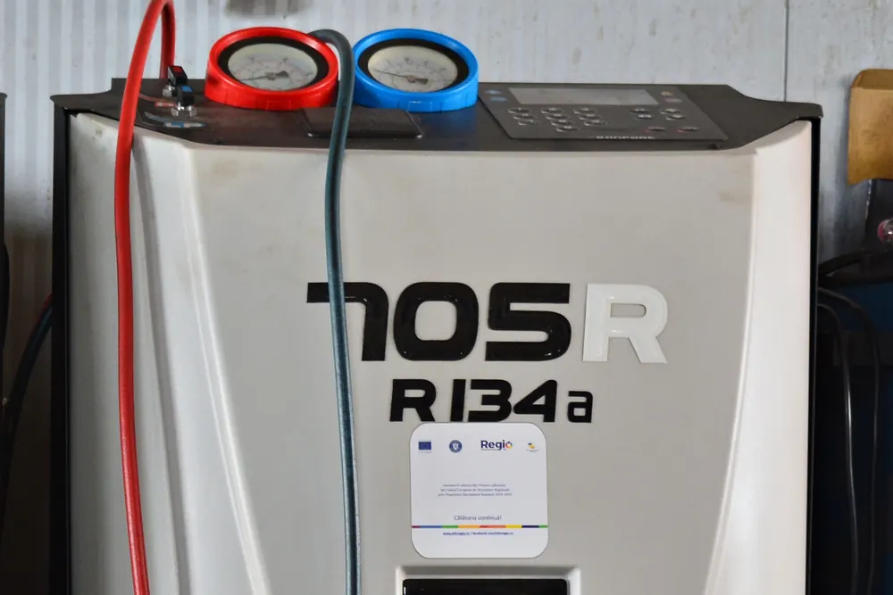
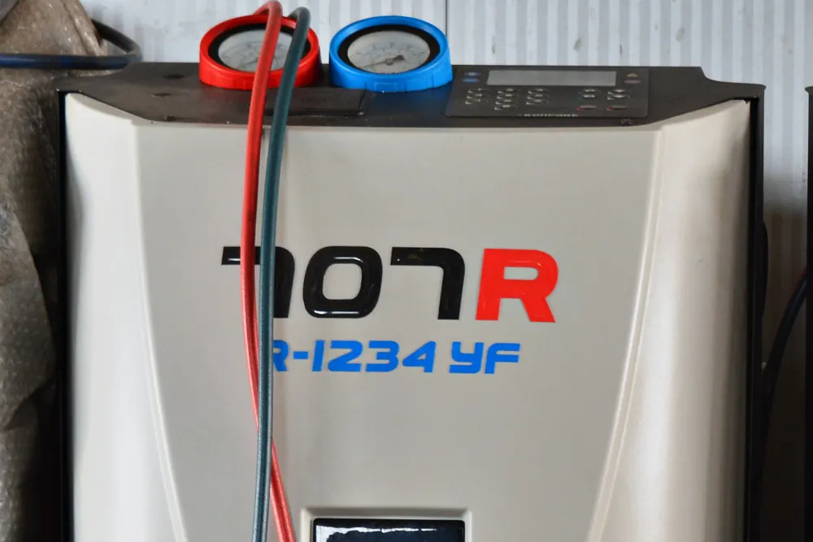

Când se încarcă freonul la mașină și cum îți dai seama că e nevoie
Aerul condiționat al mașinii nu consumă freon așa cum motorul consumă combustibil. Agentul frigorific circulă într-un circuit închis și, în teorie, ar trebui să rămână acolo toată viața mașinii. În practică, garniturile și furtunurile lasă să scape câte puțin în fiecare an, iar după câțiva ani diferența se simte: aerul nu mai iese la fel de rece, geamurile se dezaburesc greu, iar compresorul lucrează mai mult decât ar trebui.
În ghidul de mai jos găsești cum funcționează instalația, cum îți dai seama că are nevoie de verificare, ce diferență e între cele două tipuri de agent folosite azi și de ce o „completare” rapidă nu e același lucru cu o încărcare făcută corect.
Cum funcționează aerul condiționat al mașinii
Instalația nu „produce” frig, ci mută căldura din habitaclu în afara mașinii. Pentru asta, agentul frigorific trece încontinuu din lichid în gaz și înapoi, prin câteva componente:
- Compresorul este antrenat de motor și comprimă agentul, care devine un gaz fierbinte, la presiune mare.
- Condensatorul stă în fața radiatorului de apă. Aici gazul cedează căldura aerului de afară și devine lichid.
- Filtrul uscător reține umezeala și impuritățile din circuit.
- Supapa de expansiune lasă lichidul să treacă brusc la presiune mică, moment în care acesta se răcește puternic.
- Evaporatorul se află în bord. Aerul suflat de ventilator trece peste el, se răcește și își pierde umezeala, apoi ajunge la tine prin gurile de ventilație.
De aici vin două lucruri bine de știut. Primul: instalația funcționează corect doar dacă are în ea exact cantitatea de agent pentru care a fost proiectată. Al doilea: aerul condiționat nu doar răcește, ci și usucă aerul, motiv pentru care e la fel de util iarna, la dezaburire, ca vara.
De ce scade cantitatea de agent în timp
Circuitul este etanș, dar nu perfect. Furtunurile din cauciuc sunt ușor permeabile, iar garniturile de la îmbinări se întăresc odată cu trecerea anilor. La asta se adaugă vibrațiile motorului și diferențele mari de temperatură din compartimentul motor. Rezultatul este o pierdere mică și lentă, pe care nu o observi de la un an la altul, dar care se adună.
O pierdere lentă este normală. O instalație care se golește de la un sezon la altul nu este: acolo există un defect care trebuie găsit și reparat.
Semnele că instalația are nevoie de verificare
- Răcește mai slab sau mai greu decât în anii trecuți, mai ales în zilele foarte calde. Este semnul cel mai des întâlnit și apare treptat.
- Răcește doar la drum întins, iar la ralanti sau în oraș aerul se încălzește. Poate fi vorba de prea puțin agent sau de ventilatorul de răcire care nu pornește.
- Geamurile se dezaburesc încet toamna și iarna. O instalație slabă nu mai usucă aerul cum trebuie.
- Compresorul pornește și se oprește des. Când presiunea e prea mică, protecțiile instalației îl decuplează repetat.
- Zgomote neobișnuite la pornirea aerului condiționat: un huruit sau un șuierat care nu erau acolo înainte.
- Urme uleioase pe conducte sau pe condensator. Agentul circulă împreună cu uleiul compresorului, așa că o pată de ulei arată adesea locul unei pierderi.
Ce nu ține de freon
Nu orice problemă a aerului condiționat se rezolvă prin încărcare. Câteva situații care au alte cauze:
- Miros neplăcut la pornire: de regulă e filtrul de polen îmbâcsit sau umezeala adunată pe evaporator, unde se dezvoltă bacterii și mucegai.
- Aer rece, dar foarte puțin: filtrul de polen este înfundat și nu mai lasă aerul să treacă.
- Apă sub mașină, în dreptul bordului: este normal. E condensul de pe evaporator, care se scurge afară printr-un furtun.
- Apă în habitaclu, pe covorașul din dreapta: furtunul de scurgere a condensului s-a înfundat și trebuie desfundat.
Cât de des se încarcă
Producătorii nu dau un interval fix, pentru că pierderea diferă de la o mașină la alta. Ca reper, o verificare la aproximativ doi ani este suficientă pentru o instalație sănătoasă. Momentul bun este primăvara, înainte de primele zile călduroase, când service-urile nu sunt încă aglomerate.
O mașină care a pierdut tot agentul într-un singur sezon nu are nevoie de încă o încărcare, ci de găsirea locului pe unde pierde. Altfel plătești de două ori pentru același rezultat.
R134a sau R1234yf: ce are mașina ta
Mașinile mai vechi folosesc agentul R134a. Din 2017, toate mașinile noi vândute în Uniunea Europeană folosesc un agent cu impact mai mic asupra mediului, de regulă R1234yf, iar multe modele au trecut la el încă de prin 2013 - 2014. Tipul și cantitatea sunt trecute pe o etichetă de sub capotă.
| R134a | R1234yf | |
|---|---|---|
| Unde îl găsești | Mașini mai vechi | Mașini fabricate în ultimii ani |
| Impact asupra mediului | Ridicat | Foarte scăzut |
| Costul agentului | Mai mic | Mai mare |
| Aparat de încărcare | Dedicat R134a | Dedicat R1234yf |
| Se pot amesteca? | Nu. Fiecare instalație se încarcă doar cu agentul pentru care a fost construită. | |
Cele două au racorduri diferite tocmai ca să nu poată fi încurcate. Pentru că R1234yf este mai scump, merită să știi ce are mașina ta înainte să ceri o ofertă de preț.


Cum decurge o încărcare făcută corect
O încărcare corectă se face cu o stație automată, care măsoară fiecare cantitate și parcurge pașii în ordine:
- Recuperare: se scoate agentul rămas în instalație și se cântărește. Așa afli cât a pierdut mașina de la ultima încărcare.
- Vacuumare: o pompă scoate aerul și umezeala din circuit. Umezeala rămasă formează acizi care atacă piesele din interior și poate îngheța în supapa de expansiune.
- Test de etanșeitate: instalația rămâne sub vid câteva minute. Dacă vidul nu se menține, există o pierdere și nu are rost să se încarce.
- Ulei: se completează uleiul scos odată cu agentul, cel care unge compresorul.
- Încărcare: se introduce exact cantitatea prevăzută de producător pentru modelul respectiv.
- Verificare: cu motorul pornit, se controlează presiunile și temperatura aerului la gurile de ventilație.
Tot ciclul durează de regulă în jur de o oră. Cea mai mare parte din timp o ia vacuumarea, care nu trebuie scurtată.
De ce contează cantitatea exactă
Fiecare model are o cantitate prevăzută de producător, de regulă câteva sute de grame, trecută pe eticheta de sub capotă. Abaterile se simt în ambele sensuri:
- Prea puțin agent: aerul nu se răcește suficient, iar compresorul primește mai puțin ulei și se uzează mai repede.
- Prea mult agent: presiunile cresc, instalația răcește tot slab, iar compresorul este suprasolicitat.
De aceea „mai pun puțin, să fie” nu este o soluție. Singura metodă sigură este golirea instalației și încărcarea cantității corecte, măsurată la gram.
De ce nu recomandăm dozele din comerț
Dozele de completare par o soluție ieftină, dar sar peste tot ce contează într-o încărcare:
- nu ai cum să știi cât agent era deja în instalație, deci nici cât trebuie adăugat;
- nu scoți aerul și umezeala din circuit;
- nu afli dacă instalația are o pierdere;
- unele conțin substanțe de etanșare care pot înfunda componente fine și pot afecta aparatele de service la următoarea încărcare.
Când încărcarea nu rezolvă problema
Dacă aerul condiționat nu răcește nici după o încărcare făcută corect, cauza este în altă parte:
- Pierdere în instalație: un condensator lovit de pietre, o garnitură îmbătrânită, un furtun fisurat sau o supapă de umplere care nu mai închide.
- Compresor defect sau ambreiajul lui, care nu mai cuplează.
- Ventilatorul de răcire care nu pornește, caz în care aerul e rece doar în mers.
- Condensator îmbâcsit cu praf, frunze sau insecte, care nu mai poate ceda căldura.
- Probleme electrice: un senzor de presiune, un releu sau o siguranță.
- Clapete de aer blocate în bord, care amestecă aer cald peste cel rece.
O pierdere se caută prin testul sub vid, prin punerea instalației sub presiune sau cu o substanță de contrast vizibilă la lumină ultravioletă. Abia după ce defectul este reparat are sens o nouă încărcare.
Mașini hibride și electrice
La mașinile hibride și electrice, compresorul nu mai este antrenat de curea, ci de un motor electric de înaltă tensiune. Din acest motiv folosește un ulei special, care nu conduce curentul. Dacă în instalație ajunge uleiul obișnuit, folosit la mașinile clasice, izolația compresorului poate fi afectată.
La multe dintre aceste mașini, aceeași instalație răcește și bateria, deci o funcționare slabă nu înseamnă doar disconfort. Dacă ai o astfel de mașină, spune acest lucru de la programare, ca service-ul să știe ce procedură și ce ulei îi trebuie.
Aerul condiționat iarna
Mulți șoferi îl opresc din octombrie până în mai. Este o greșeală din două motive. Primul: iarna, aerul condiționat este cel care dezaburește rapid parbrizul, pentru că scoate umezeala din aer. Al doilea: uleiul din circuit ține garniturile etanșe doar dacă circulă. O instalație nefolosită luni întregi pierde agent mai repede.
Ajunge să îl pornești câteva minute pe săptămână, chiar și cu încălzirea pornită.
Cinci obiceiuri care prelungesc viața instalației
- Pornește aerul condiționat tot anul, măcar câteva minute pe săptămână.
- Schimbă filtrul de polen o dată pe an sau la fiecare revizie.
- Oprește aerul condiționat cu puțin înainte de destinație și lasă doar ventilația. Evaporatorul se usucă și apar mai greu mirosurile.
- Aerisește mașina încinsă înainte să pornești răcirea la maximum: deschide geamurile un minut, apoi închide-le.
- Nu amâna verificarea când observi că răcește mai slab. Un compresor care merge cu prea puțin agent se uzează mai repede, iar înlocuirea lui costă mult mai mult decât o încărcare.
Patru idei greșite despre aerul condiționat
- „Freonul se consumă și trebuie pus în fiecare an.” Nu se consumă. Dacă trebuie completat anual, instalația are o pierdere.
- „Cu cât mai mult freon, cu atât mai rece.” Prea mult agent strică la fel de mult ca prea puțin.
- „Iarna nu am nevoie de el.” Iarna îl folosești la dezaburire și îl menții în stare bună.
- „Dacă nu mai răcește, sigur trebuie încărcat.” Uneori da. Alteori e un ventilator, un senzor sau un filtru înfundat.
De ce depinde prețul unei încărcări
Prețul nu este același pentru orice mașină. Contează tipul de agent (R1234yf este mai scump decât R134a), cantitatea pe care o cere instalația și dacă, la verificare, apare ceva de reparat. De aceea e mai corect să ceri o ofertă pentru mașina ta, cu marca, modelul și anul de fabricație, decât să compari prețuri generale.
Verificare și încărcare la GAV Auto
La noi găsești câte o stație pentru fiecare tip de agent, deci lucrăm atât pe mașini mai vechi, cât și pe cele noi. Verificăm întâi dacă instalația e etanșă și îți spunem ce am găsit înainte de orice lucrare. Iar dacă apare ceva de reparat, mecanicii noștri sunt în același atelier. Detalii pe pagina de aer condiționat auto în Brașov.
Întrebări frecvente
Cât de des se încarcă freonul la mașină?
Nu există un termen fix. O verificare la aproximativ doi ani e un reper bun. Dacă răcește mai slab decât înainte, merită verificată mai devreme.
Cum aflu dacă mașina mea are R134a sau R1234yf?
Tipul și cantitatea de agent frigorific sunt trecute pe o etichetă de sub capotă. Ca regulă, mașinile mai vechi au R134a, iar cele fabricate în ultimii ani, R1234yf.
Pot completa singur freonul, cu o doză din comerț?
Nu recomandăm. Cu o doză nu poți măsura cât agent e deja în instalație și nu elimini umezeala. Prea mult agent strică la fel de mult ca prea puțin.
Am încărcat și după câteva săptămâni iar nu răcește. De ce?
Instalația pierde agent pe undeva sau are o piesă defectă. O nouă încărcare ar ține la fel de puțin, așa că întâi trebuie găsită cauza.
Cât durează o încărcare?
Ciclul complet, cu recuperare, vacuumare, test de etanșeitate și încărcare, durează de regulă în jur de o oră.
E normal să curgă apă sub mașină când merge aerul condiționat?
Da. Este condensul de pe evaporator, care se scurge afară. Dacă apa apare în habitaclu, furtunul de scurgere e înfundat și trebuie desfundat.
Trebuie să folosesc aerul condiționat și iarna?
Da, măcar câteva minute pe săptămână. Dezaburește geamurile mai repede, iar uleiul din circuit menține garniturile etanșe.